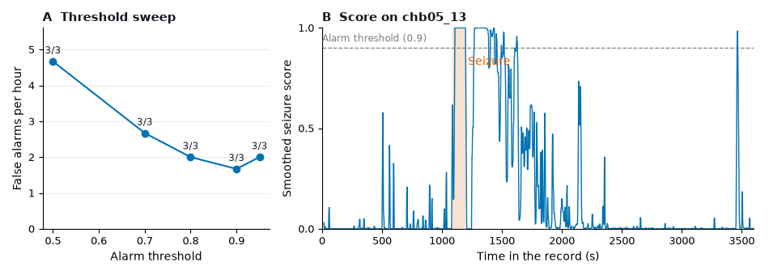

Note
Go to the end to download the full example code.
Seizure alarm on CHB-MIT, scored with SzCORE#
This tutorial trains a seizure detector on two patients of the CHB-MIT Scalp
EEG Database [1] and tests it on a third patient, so the model never sees the
test patient. A causal post-processing turns the window scores into alarms.
braindecode.training.szcore_event_scores() then scores the alarms with the
event-based SzCORE rules [2], and we report sensitivity and false alarms per hour.
We read seven EDF files (about 250 MB) directly from PhysioNet. We do not use
braindecode.datasets.CHBMIT, which downloads a 21.7 GB BIDS archive.
# Authors: Aayushya Patel <67443596+ptlnextdoor@users.noreply.github.com>
#
# License: BSD (3-clause)
Download the recordings#
Each record has a known SHA-256 hash, so pooch downloads it once and
checks it. The seizure times, in seconds from the start of each record, come
from the chbNN-summary.txt files of the database. Patients chb01 and
chb02 train the model and patient chb05 tests it.
from pathlib import Path
import mne
import pooch
URL = "https://physionet.org/files/chbmit/1.0.0"
CACHE = Path(mne.get_config("MNE_DATA", "~/mne_data")).expanduser() / "chbmit"
# record: (seizure onset, seizure offset, SHA-256)
TRAIN = {
"chb01_18": (1720, 1810, "da6c386c78d6f8348b38886b90bf67e4dc2e6f26e5eb657c1920d612fc0651b5"),
"chb01_21": (327, 420, "ceb3e5c3e6d513ed8894d6d5d5fd4599c5650e98a1a1c960660b0031b720e559"),
"chb01_26": (1862, 1963, "c70832d28f4e2905e5f0179fdb7d5ec24c4f24006adf6a9905b60072a75cc630"),
"chb02_16": (130, 212, "b50345b4b7d35d2735e3d2fc5f7df3e39a60916a881a11f2cd40337e529ea3fa"),
} # fmt: skip
TEST = {
"chb05_06": (417, 532, "8a15d8871289ff5947136c2bbd4482af9a9ac30d402efd3357993b064e86a2fd"),
"chb05_13": (1086, 1196, "2691a118f880811b0c74b9314bbae7a659870325932c32a08b0a569f5ff29a81"),
"chb05_16": (2317, 2413, "9a608a87f85378a59cd149d26addf2946e334148380d955e710fd3eb14341074"),
} # fmt: skip
def fetch(record, sha256):
return pooch.retrieve(
f"{URL}/{record[:5]}/{record}.edf",
known_hash=f"sha256:{sha256}",
fname=f"{record}.edf",
path=CACHE,
)
Load and preprocess#
We keep the 18 bipolar channels of the longitudinal montage that all three
patients share. MNE renames the duplicated T8-P8 channel to T8-P8-0
and T8-P8-1, so we read the whole file and then pick the channels.
A seizure is rare, so we train on the seizure plus 300 s on each side of it, and we keep the test records whole: counting false alarms per hour needs every hour. We resample to 128 Hz and convert volts to microvolts.
from braindecode.datasets import BaseConcatDataset, RawDataset
CHANNELS = [
"FP1-F7", "F7-T7", "T7-P7", "P7-O1", "FP1-F3", "F3-C3", "C3-P3", "P3-O1",
"FP2-F4", "F4-C4", "C4-P4", "P4-O2", "FP2-F8", "F8-T8", "T8-P8-0", "P8-O2",
"FZ-CZ", "CZ-PZ",
] # fmt: skip
SFREQ = 128
MARGIN_S = 300
def load(record, onset, offset, sha256, crop):
raw = mne.io.read_raw_edf(fetch(record, sha256), preload=True, verbose="error")
raw.pick(CHANNELS)
if crop:
tmin = max(0, onset - MARGIN_S)
raw.crop(tmin, min(offset + MARGIN_S, raw.times[-1]))
onset, offset = onset - tmin, offset - tmin
raw.resample(SFREQ)
raw.apply_function(lambda x: x * 1e6)
# One annotation per stretch, so that the windower can sample each class.
stretches = [
("background", 0, onset),
("seizure", onset, offset),
("background", offset, raw.times[-1]),
]
stretches = [(d, a, b) for d, a, b in stretches if b > a]
raw.set_annotations(
mne.Annotations(
onset=[a for _, a, _ in stretches],
duration=[b - a for _, a, b in stretches],
description=[d for d, _, _ in stretches],
)
)
return RawDataset(raw, {"record": record})
train_set = BaseConcatDataset([load(r, *v, crop=True) for r, v in TRAIN.items()])
test_set = {r: load(r, *v, crop=False) for r, v in TEST.items()}
Training windows#
We cut 4 s windows. The stride differs per class: 1 s inside a seizure and 5 s in the background, which balances the classes in the training set.
from braindecode.preprocessing import create_windows_from_events
train_windows = create_windows_from_events(
train_set,
window_size_samples=4 * SFREQ,
window_stride_samples={"seizure": SFREQ, "background": 5 * SFREQ},
mapping={"background": 0, "seizure": 1},
on_last_window="drop",
preload=True,
)
labels = [y for _, y, _ in train_windows]
print(f"{len(labels)} training windows, {sum(labels)} of them in a seizure")
800 training windows, 354 of them in a seizure
Train a model#
braindecode.models.ShallowFBCSPNet is a small convolutional network
that trains in seconds on a CPU. We train it for 15 epochs and do not tune it,
because the tutorial focuses on the scoring.
import torch
from braindecode import EEGClassifier
from braindecode.models import ShallowFBCSPNet
from braindecode.util import set_random_seeds
set_random_seeds(seed=0, cuda=False)
clf = EEGClassifier(
ShallowFBCSPNet,
module__n_chans=len(CHANNELS),
module__n_outputs=2,
module__n_times=4 * SFREQ,
module__final_conv_length="auto",
optimizer=torch.optim.AdamW,
optimizer__lr=1e-3,
batch_size=64,
max_epochs=15,
train_split=None,
device="cpu",
verbose=0,
)
clf = clf.fit(train_windows, y=None)
Alarm post-processing#
On each test record we slide 4 s windows with a 2 s stride and take the probability of the seizure class. Two causal filters smooth the scores: the mean of the last 5 scores, then the minimum of the last 3, so one noisy window cannot raise an alarm. Both filters use only past, full windows, so an alarm could fire in real time, at the earliest 16 s into a record.
A window whose smoothed score exceeds the threshold raises an alarm for the
last 2 s it covers, [start + 2, start + 4).
import numpy as np
import pandas as pd
from braindecode.preprocessing import create_fixed_length_windows
WINDOW_S, STRIDE_S = 4, 2
def smoothed_scores(dataset):
windows = create_fixed_length_windows(
BaseConcatDataset([dataset]),
window_size_samples=WINDOW_S * SFREQ,
window_stride_samples=STRIDE_S * SFREQ,
on_last_window="drop",
preload=True,
)
prob = clf.predict_proba(windows)[:, 1]
starts = windows.get_metadata()["i_start_in_trial"].to_numpy() / SFREQ
score = pd.Series(prob).rolling(5).mean()
return starts, score.rolling(3).min().to_numpy()
scores = {name: smoothed_scores(ds) for name, ds in test_set.items()}
Score the alarms with SzCORE#
szcore_event_scores() scores one record. To pool
the three test records, we add up the detected seizures, the false alarms and
the hours. SzCORE counts a seizure as detected when an alarm overlaps it,
starting up to 30 s before and ending up to 60 s after it.
We show a sweep over thresholds. A single test patient cannot also choose the threshold without leaking the test data. A real system fits it on separate calibration patients.
from braindecode.training import szcore_event_scores
def pooled_scores(threshold):
tp = n_ref = fp = hours = 0
for name, (starts, score) in scores.items():
onset, offset, _ = TEST[name]
alarms = starts[score > threshold]
events = np.c_[alarms + WINDOW_S - STRIDE_S, alarms + WINDOW_S]
duration = test_set[name].raw.times[-1]
result = szcore_event_scores([(onset, offset)], events, duration)
tp += result["tp"]
n_ref += result["n_ref_events"]
fp += result["fp"]
hours += duration / 3600
return {
"threshold": threshold,
"detected seizures": f"{tp}/{n_ref}",
"false alarms per hour": round(fp / hours, 2),
}
table = pd.DataFrame([pooled_scores(t) for t in (0.5, 0.7, 0.8, 0.9, 0.95)])
print(table.to_string(index=False))
threshold detected seizures false alarms per hour
0.50 3/3 4.67
0.70 3/3 2.67
0.80 3/3 2.00
0.90 3/3 1.67
0.95 3/3 2.00
A higher threshold keeps fewer alarm windows: it trades false alarms for missed seizures. The numbers come from one seed, three seizures and three hours of one patient, so they only illustrate the scoring.
Look at one record#
Panel A draws the sweep above: the false alarms per hour of each threshold,
labelled with the number of test seizures it detects. Panel B shows the
smoothed score of chb05_13 with the seizure shaded and the 0.9 threshold
dashed.
import matplotlib.pyplot as plt
BLUE, VERMILION, GREY, INK = "#0072B2", "#D55E00", "#7F7F7F", "#14181F"
# MOABB, imported by ``braindecode.datasets``, sets a seaborn style when it is
# imported, so we go back to the matplotlib defaults before our own settings.
plt.rcdefaults()
plt.rcParams.update(
{
"figure.facecolor": "white",
"axes.facecolor": "white",
"font.family": "sans-serif",
"font.size": 10,
"axes.labelsize": 10,
"axes.titlesize": 10.5,
"xtick.labelsize": 9,
"ytick.labelsize": 9,
"axes.linewidth": 0.8,
"axes.spines.top": False,
"axes.spines.right": False,
"xtick.direction": "out",
"ytick.direction": "out",
}
)
fig, (ax_sweep, ax_trace) = plt.subplots(
1, 2, figsize=(9.5, 3.4), gridspec_kw={"width_ratios": [1, 1.9]}
)
ax_sweep.plot(
table["threshold"], table["false alarms per hour"], color=BLUE, marker="o"
)
for threshold, fa, n_detected in zip(
table["threshold"], table["false alarms per hour"], table["detected seizures"]
):
ax_sweep.annotate(
n_detected,
xy=(threshold, fa),
xytext=(0, 7),
textcoords="offset points",
color=INK,
fontsize=8.5,
ha="center",
)
ax_sweep.set_ylim(0, 1.2 * table["false alarms per hour"].max())
ax_sweep.set_xlabel("Alarm threshold")
ax_sweep.set_ylabel("False alarms per hour")
ax_sweep.grid(axis="y", color="#EAEAEA", linewidth=0.7)
ax_sweep.set_axisbelow(True)
ax_sweep.set_title("A Threshold sweep", loc="left", fontweight="bold", color=INK)
starts, score = scores["chb05_13"]
onset, offset, _ = TEST["chb05_13"]
ax_trace.axvspan(onset, offset, color=VERMILION, alpha=0.18, linewidth=0)
ax_trace.text(offset + 20, 0.86, "Seizure", color=VERMILION, va="top")
ax_trace.plot(starts + WINDOW_S, score, color=BLUE, linewidth=1.0)
ax_trace.axhline(0.9, color=GREY, linestyle="--", linewidth=0.9)
ax_trace.text(
0,
0.92,
"Alarm threshold (0.9)",
color=GREY,
fontsize=8.5,
va="bottom",
)
ax_trace.set_xlim(0, starts[-1] + WINDOW_S)
ax_trace.set_ylim(0, 1)
ax_trace.set_yticks([0, 0.5, 1])
ax_trace.set_xlabel("Time in the record (s)")
ax_trace.set_ylabel("Smoothed seizure score")
ax_trace.set_title("B Score on chb05_13", loc="left", fontweight="bold", color=INK)
fig.tight_layout()
plt.show()

References#
Total running time of the script: (0 minutes 22.371 seconds)
Run this example